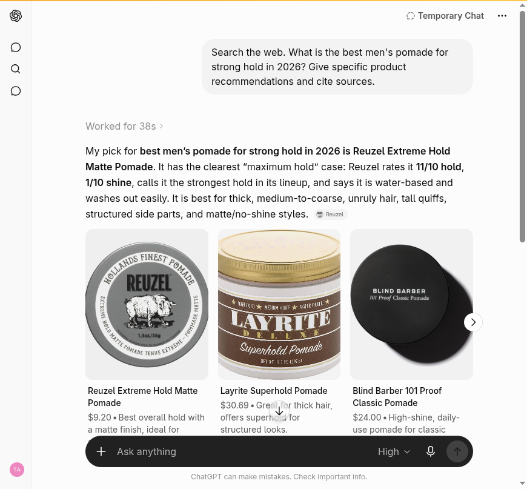

Blackwell Enterprises
An external audit of how AI engines and search see Reuzel today. And what we would do about it.
We graded Reuzel on five dimensions of how AI engines and search treat the brand. Each dimension is scored 0 to 100 against observed behavior across AI answer engines, the category listicles those engines cite, third-party reputation sources, the brand's own indexed pages, and the agent-commerce surface. Competitor scores are our estimates from the same public signals. Composite is the simple average.
Reuzel is in good shape. It is reached by every AI crawler, recommended by name in most engines, and already runs the full agent-commerce stack. The headroom is concentrated in one place: the structured data engines quote from. The flagship is named as a top strong-hold pomade in a clean four of six engines. The gap is Quotability (70): the 4.9-star rating shoppers see is locked in JavaScript, so a crawler reading reuzel.com sees a product with no rating, and the brand field in the schema says "reuzelinc". Notably, competitor American Crew already exposes its rating in product schema, the exact fix Reuzel needs. Every gap below is a field-level change, not a rebuild.
| Dimension | Reuzel | Suavecito | Layrite | Am. Crew | What it measures |
|---|---|---|---|---|---|
| Discoverability | 80 |
74 | 72 | 70 | Entity presence, agent discovery files, crawler access, third-party listings |
| Quotability | 70 |
68 | 70 | 80 | Schema depth, structured product and policy data, accuracy in machine-readable form |
| Recommendability | 76 |
82 | 74 | 80 | Inclusion in AI category recommendations and the listicles engines cite |
| Transactability | 90 |
85 | 85 | 80 | UCP and MCP endpoints, payment handlers, agent-readable pricing |
| Reputation | 78 |
76 | 74 | 78 | Review aggregator presence and rating, sentiment, links from the entity to that reputation |
| Composite | 79 (B) | 77 (B) | 75 (B) | 78 (B) | Reuzel leads a strong set by a small margin, on Discoverability and the agent layer. The one place it trails, the rating in structured data, is where American Crew already wins. |
Grading scale: A 90+, B 75 to 89, C 60 to 74, D 50 to 59, F below 50. Competitor scores are estimates from observed public signals, not a full audit of those brands. Method and queries in the methodology section.
Reuzel is a strong brand with a genuine origin story: the pomades born out of the Schorem barbershop in Rotterdam, sold direct and through Amazon, Ulta, Sally Beauty, and barbershops, on a Shopify store that already runs the full agent-commerce stack. Asked for the best men's pomade for strong hold, AI engines name Reuzel by name, and ChatGPT makes the Extreme Hold Matte its top pick. The product is reviewed at 4.6 to 4.9 stars across thousands of reviews. The gap is narrow and specific: the data engines quote from. The 4.9-star rating shoppers see is locked in JavaScript, so the crawler that reads reuzel.com directly sees a product with no rating at all, and the schema labels the brand "reuzelinc".
Six findings, ordered by leverage. The sixth is a strength.
aggregateRating at all. The single fact that most drives a recommendation is the one the brand's own page does not expose."brand": "reuzelinc", the Shopify store slug, while the Organization blocks on the same page correctly say "Reuzel". The page contradicts itself on its own brand entity. One field.@context is http rather than https, the Organization blocks have duplicate and empty sameAs entries, and four review apps load on one page where one should.agents.md, and an agentic-discovery sitemap. An AI agent can search, cart, and run a buyer-approved checkout today. This is the asset to build on.Finding 1 of 6 · High severity
Reuzel's product pages show a strong star rating to a shopper. An AI crawler reading the same page from the raw HTML sees a product with no rating at all. The rating is the single fact that most drives a recommendation, and it is the one fact the brand's own page does not expose to a machine.
// Reuzel Pink pomade PDP, June 17 to 22, 2026 What a shopper sees (JavaScript review widget): 4.9 stars from 168 reviews What ClaudeBot reads (raw HTML Product block): aggregateRating = none review nodes = none Server-rendered and correct: Product + Offer (price 19.95 USD, InStock, SKU REU203) + FAQ
Why it matters
The price path is good: a crawler that does not run JavaScript still reads the price, the stock status, and the FAQ answers. The rating path is the gap. Reuzel has earned thousands of strong reviews, then kept them in JavaScript widgets the crawlers cannot read, so the engines learn the brand's reputation secondhand from resellers and listicles instead of from reuzel.com. Competitor American Crew already exposes AggregateRating in its product schema, so this is a solved problem in the category, just not on Reuzel's pages yet.
The fix. Turn on AggregateRating output in the live review app so every product page carries its rating and review count in the server-rendered HTML. This is the highest-leverage change on the site: it makes reuzel.com the citable source for the social proof the brand already earns. We deliver the exact schema payload and re-test it as a crawler.
Finding 2 of 6 · Medium severity
The structured data on the product page contradicts itself about what the brand is called. The Product block names the Shopify store slug; the Organization blocks on the same page name the brand. An engine reading the brand field to attribute or group the product gets a string no shopper would ever search.
// Reuzel Pink pomade PDP, Product structured data Product.brand: { "@type": "Brand", "name": "reuzelinc" } // the myshopify slug Organization blocks (same page): name = "Reuzel" // correct @context: http://schema.org/ // http, stricter validators prefer https Organization.sameAs: duplicated and empty entries, including a bare "#"
Why it matters
Entity resolution is how an engine decides that the product, the brand, the reviews, and the origin story are all the same thing. When the page says both "reuzelinc" and "Reuzel," it lowers the engine's confidence in the entity and weakens every downstream attribution, including the rating fix above. The http context and the malformed sameAs entries are the same kind of low-grade noise. None of it is a redesign; it is a handful of field corrections in data Shopify already emits.
The fix. Set the Product brand to "Reuzel," move the schema @context to https, and remove the empty and duplicate sameAs entries on the Organization blocks. We deliver the corrected payloads; the brand applies them in the theme.
Finding 3 of 6 · Strength with two soft spots
This is where most brands fail and Reuzel succeeds. We ran the full six-engine battery, two passes each (from the model's memory with web search off, then with live retrieval on), on "best men's pomade for strong hold." Logged-in engines ran in incognito or a temporary chat so saved history could not inflate the result. Reuzel is named in four of the six engines, and is the top pick in ChatGPT.
| Engine (clean session) | From memory (search off) | Live web retrieval (search on) |
|---|---|---|
| ChatGPT (Temporary Chat) | Reuzel Blue | top pick: Extreme Hold Matte |
| Perplexity (Incognito) | retrieval only | best pick, cites reuzel.com |
| Claude | not named | named, cites reuzel.com |
| Copilot (guest) | retrieval only | named with Suavecito |
| Google AI Overview | retrieval only | varies by render |
| Gemini | not measured clean | not measured clean |
ChatGPT, Temporary Chat, live retrieval: "best men's pomade for strong hold"
"My pick for best men's pomade for strong hold in 2026 is Reuzel Extreme Hold Matte Pomade. Reuzel rates it 11 out of 10 hold, 1 out of 10 shine, the strongest hold in the lineup."

ChatGPT in a Temporary Chat (no saved history) names Reuzel Extreme Hold Matte as its top pick and quotes Reuzel's own hold spec. Captured June 22, 2026.
The two soft spots, and the borrowed-recommendation problem
Google's AI Overview is non-deterministic for this query: in two same-day renders it named Reuzel in one and omitted it in the other (favoring Suavecito, Blind Barber, and Duke Cannon), so the brand's place there is not yet stable. Gemini could not be run in a clean session because the test profile carried prior Reuzel searches, so it is reported as unmeasured rather than counted. The deeper point sits under the wins: where engines name Reuzel, the better ones cite reuzel.com, but Copilot still builds its answer from an Amazon-sourced Bing carousel and names the brand without crediting its site. The rating and brand fixes above are what convert "recommended from listicles" into "recommended and cited from reuzel.com" everywhere.
The fix. Recommendability is already strong; the lever is source authority. Findings 1 and 2 make reuzel.com the place engines read the rating and the brand from, which stabilizes the volatile renders and pulls the carousel engines onto the brand's own page.
Finding 4 of 6 · Medium severity
A set of small, mechanical gaps in the catalog feed and the review stack. None is severe alone; together they soften the category signal an engine and an agent read, and they make the rating fix in finding 1 cleaner once addressed.
// reuzel.com catalog and review stack, June 17 to 22, 2026 Products in the feed: 89 (130 variants, 118 in stock) Products with an empty product_type: 49 of 89 // weakens the category signal Review and UGC apps loaded on one PDP: 4 // Okendo, Yotpo, Loox, Judge.me Plausibly canonical review source: 1
Why it matters
Product type is part of how an engine and a faceted search read what a product is; filling it across the catalog sharpens that signal at no design cost. The four review apps on a single page are most likely leftovers from past installs. Beyond the page weight, the clutter makes it ambiguous which review corpus is the brand's source of truth, which is exactly the question the rating fix needs answered. Confirming the live app and pruning the rest makes finding 1 straightforward.
The fix. Assign a product type to the 49 products that lack one, and consolidate to the single live review app. We deliver the product-type mapping and confirm which app is canonical; the brand applies both in its systems.
Finding 5 of 6 · Medium severity
Reuzel's reputation is genuinely strong wherever it is exposed. The problem is distribution, not substance: the brand does not surface its own proof in a form engines can read, and it leaves one trust channel unclaimed.
// Reuzel reputation corpus, live reads, June 22, 2026 Ulta, Reuzel Blue pomade: 4.8 / 5 (358 reviews) Ulta, Reuzel Red pomade: 4.9 / 5 (182 reviews) Amazon, Reuzel Red pomade: ~4.6 / 5 (5,000+ reviews) reuzel.com on-page widget: 4.9 / 5 (168 reviews, JavaScript only) Trustpilot business profile: unclaimed (1 review; third-party reseller pages only)
Why it matters
Reuzel was created in 2013 by the barbers behind Schorem, the Rotterdam barbershop, and the name means pork drippings, a nod to the grease pomade. It is a well-documented, frequently retold origin story across grooming media, which gives the engines a strong, consistent entity to attach the brand to. Most direct-to-consumer brands have nothing like it. The gap is that the excellent ratings almost never reach an engine from reuzel.com, because of the missing schema rating in finding 1, and that Trustpilot, a source several engines weight for trust, shows no claimed Reuzel profile.
The fix. The schema rating fix (finding 1) converts the earned reviews into a signal engines can quote. Separately, claiming the Trustpilot business profile and seeding it with existing reviews opens a closed trust channel. The schema is ours to deliver; claiming the profile is the brand's to execute.
Finding 6 of 6 · Strength to build on
For most brands this is the hardest dimension and the one they score worst on. Reuzel scores highest here, because Shopify ships the whole stack and the brand has it switched on. We verified the endpoints directly.
// reuzel.com agent surface, June 17 to 22, 2026 /.well-known/ucp live (UCP merchant profile, version 2026-04-08; cart, checkout, fulfillment, discount) /api/ucp/mcp live (the endpoint an agent calls; enforces agent-identity handshake first) agents.md · llms.txt · llms-full.txt 200 (agent instructions and the buyer-approval rule) sitemap_agentic_discovery.xml present · /products.json live (full catalog as JSON)
Why it matters, and the honest caveat
An AI agent acting for a shopper can discover the store's capabilities, search the catalog, build a cart, set shipping, and complete a checkout the buyer must approve through Shop Pay. The UCP endpoint enforces the agent-identity handshake before it lists its tools, which is the correct, secure behavior. The caveat: Reuzel gets most of this from being on Shopify, so it is a platform advantage rather than a custom build, and its closest competitors (Suavecito, Layrite) run the same stack. There is nothing to fix here. The point is to keep the catalog data those agents read, brand and rating included, correct, which findings 1 and 2 handle, so an agent that arrives reads a clean, citable product.
The lever. Keep the Shopify agent layer current with the UCP version Shopify ships, and make sure the brand and rating in the feed are correct (findings 1, 2) so the agent reads accurate data at the moment of purchase.
The same machine-readable signals across the four brands, all checked the same day. Reuzel leads on discoverability and is at parity on the agent layer. The one signal where it trails, the rating in product schema, is one American Crew already exposes.
| Signal | Reuzel | Suavecito | Layrite | Am. Crew |
|---|---|---|---|---|
| Named in AI category answers | yes (top in ChatGPT) | yes | yes | yes |
| aggregateRating in product schema | none | none | none | yes |
| Brand field correct in schema | "reuzelinc" | correct | correct | correct |
| Live agent stack (ucp + agents.md) | yes | yes | yes | yes |
| Claimed Trustpilot profile | no | n/a | n/a | n/a |
The set is strong across the board, which is the honest framing: Reuzel competes with brands that are also named by the engines and also run the agent stack. Reuzel's edge is its origin story and discoverability; its one clear deficit is the rating in structured data, where American Crew shows what good looks like. Competitor scores are estimates from the same public signals, consistent with the scorecard columns.
Reuzel does not need a rebuild. It needs a short, high-leverage data sprint. Phase 1 is a 30-day pass that makes the rating and the brand entity machine-readable and cleans the catalog hygiene. Phase 2 is ongoing AI visibility work that holds the position and closes the volatile renders. After Phase 1 we measure against benchmarks set together and decide whether Phase 2 makes sense.
Phase 1 · 30 days
Five remediations, ranked by leverage, each closing a finding above.
AggregateRating so every PDP carries its rating and review count in raw HTML (finding 1)@context to https, and remove the empty and duplicate sameAs entries (finding 2)AggregateRating server-rendered and validator-clean on every PDP; the Product brand reading "Reuzel" with an https context and a clean sameAs; product type populated across the catalog; and a measurable lift in engines citing reuzel.com for the rating. $1,000 all-in for Phase 1, refunded in full if the benchmarks are not met.What is ours, what is yours, what the engines decide
We produce the exact schema payloads, the field corrections, the catalog product-type mapping, and the re-test that measures movement. Turning on the app setting, editing the live theme, claiming the Trustpilot profile, and pruning the review apps are changes inside Reuzel's own systems that the brand executes; we hand over the precise specs and verify the result. Where an outcome depends on a third party, such as a publisher updating a roundup, we flag it and do not promise it.
Phase 2 and beyond
Phase 1 makes reuzel.com the citable source. Phase 2 holds it there: continuous AI behavior monitoring per dimension with drift alerts, so the volatile Google AI Overview render is caught and corrected; an entity establishment campaign so the engines resolve "Reuzel" cleanly with its Schorem origin and its rating; and tracking the UCP and agent-commerce changes that move every quarter, where Reuzel already has a head start. Phase 2 scope and pricing are discussed after Phase 1 benchmarks land.
Every finding came from running specific tools and queries against public surfaces, in an order designed to separate what Reuzel publishes from what machines actually do with it. It is all externally reproducible.
Truth table, frozen first
Before querying any engine, we pulled Reuzel's own machine surface directly: homepage and product <head> and JSON-LD, robots.txt, agents.md, llms.txt, /.well-known/ucp, the /api/ucp/mcp endpoint, the agentic-discovery sitemap, and the product feed (89 products, 130 variants). AI-crawler access was tested by fetching a product page under the GPTBot, ClaudeBot, PerplexityBot, OAI-SearchBot, Google-Extended, Amazonbot, and Bingbot user agents; every one returned a 200. The rating gap in finding 1 came from reading the same PDP both in a browser and as ClaudeBot reads it.
AI behavior and recommendability
We ran the full six-engine battery (ChatGPT, Perplexity, Gemini, Claude, Google AI Overview, Microsoft Copilot) in headed browser sessions, two passes each: from the model's memory with web search off, then with live retrieval on. Logged-in engines were run in incognito or temporary chat (ChatGPT Temporary Chat, Perplexity Incognito) so saved history did not bias the result; Copilot ran as a guest. Each engine and pass was captured to a screenshot. Reuzel was named in ChatGPT, Perplexity, Claude, and Copilot; Google AI Overview varied by render and Gemini could not be measured clean, both noted in finding 3.
Reputation corpus
We pulled Reuzel's reputation live from Ulta, Amazon, Reddit, YouTube, Trustpilot, and the brand's own review surface, and checked whether any of it is linked to the product's structured data. The 4.6 to 4.9 ratings are real and abundant; the missing server-rendered aggregateRating and the unclaimed Trustpilot profile are findings 1 and 5. Retailer figures are live page reads and move over time.
Competitive set
Suavecito, Layrite, and American Crew were checked the same day on the same signals (homepage and product schema, the brand field, AI category presence, agent endpoints). Their dimension scores are estimates from those public signals, not full audits, and are labeled as such on the scorecard.
robots.txt, sitemap.xml, agents.md, llms.txt, /.well-known/ucp, and /products.json. Reputation and recommendability findings are reproducible by running the same public queries. Catalog counts pulled June 17 to 22, 2026.